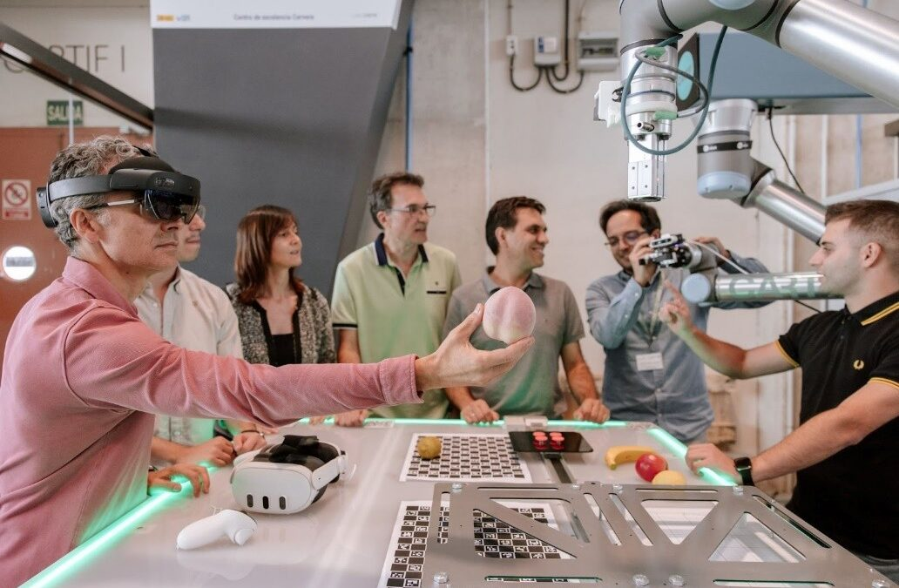

TEF1: Experimental Robotic cell for Complex Picking and Dismantling Applications
{kind=link}

Innovation is at the forefront of our TEF1, providing unparalleled support in experimental design and human-robot interaction research innovation. It is a hub for designing and conducting experiments related to human-robot interaction, evaluating robot behaviour adaptation algorithms, testing, or assessing the impact of collaborative tasks on productivity.
This TEF is for manufacturers, assembly lines, and logistics operators utilising our facilities to test and refine robotic systems designed to streamline production processes. Here, you can develop new algorithms and control strategies that make robots more intuitive, adaptable, and collaborative. This not only boosts efficiency but also enhances workplace safety, making TEF1 a critical supportive player in the future of your industrial operations.
Pushing the boundaries of human-robot interaction
In TEF1 we offer a diverse range of experimental opportunities aimed at advancing human-robot interaction (HRI) in industrial settings. Some of our key projects include:
Adapting Robot Behavior to Operator Conditions: We focus on creating algorithms that allow robots to modify their behavior based on the operator’s condition and preferences, making interactions more seamless and efficient.
Identification of Complex Objects: Together we develop sophisticated computer vision and machine learning techniques that enable robots to identify and handle complex objects within their environments.
Human-Robot Interfaces Using XR (Extended Reality): By leveraging XR technologies, we create intuitive and immersive interfaces that allow users to interact with robots naturally. These interfaces overlay digital information onto the physical world, enhancing the user experience.
Human-Robot Interfaces Using Natural Language: We develop natural language tools that enable humans to interact with robots through spoken commands. This allows robots to understand and respond to verbal instructions in real-time, making interactions more fluid and human-like.
Addressing real-world challenges of our industries.
In ARISE a particular focus is on:
Dismantling and Assembly of High-Value Products: Developing precise and reliable methods for handling items.
Additional explanatory text can go here.
Driving Innovation and Collaboration
Our overarching goal in TEF1 is to enhance HRI and collaboration in industrial settings, driving improvements in productivity, efficiency, and safety across various industries. By fostering collaborative research and development, we aim to seamlessly integrate robotic systems into existing workflows, augmenting human capabilities and driving transformative changes in industrial production and logistics. Ultimately, TEF1 serves as a catalyst for innovation, empowering users to unlock the full potential of collaborative robotics in industrial environments.
Visit our colleage’s TEFs
Please make a visit to our partners’ Testing and Experimental Facilities:
TEF2 (Intellimec): Re-programmable Co-bots for Flexible Manufacturing
TEF3 (PAL Robotics): Revolutionizing Healthcare with Human-Centered Robotics
TEF4 (POLIMI): Leading the way towards human-centric zero-defect manufacturing